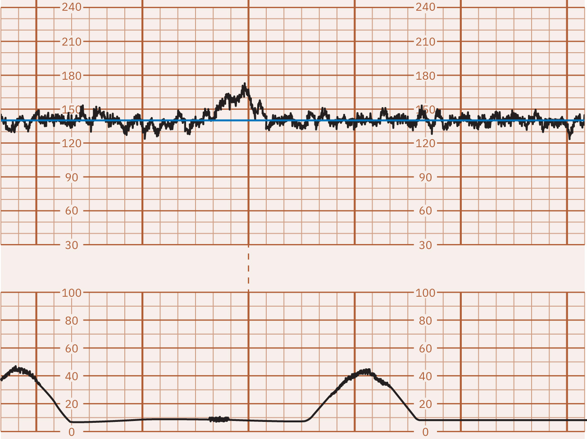
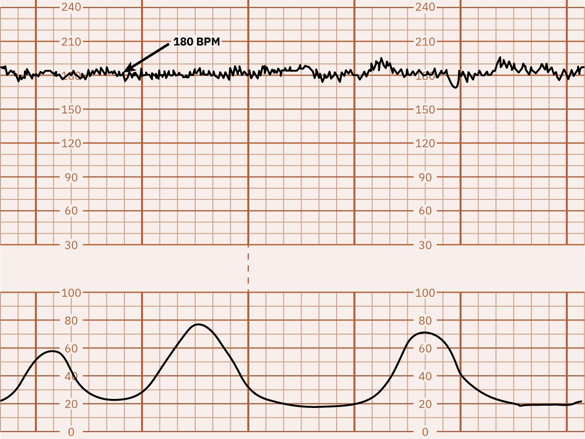
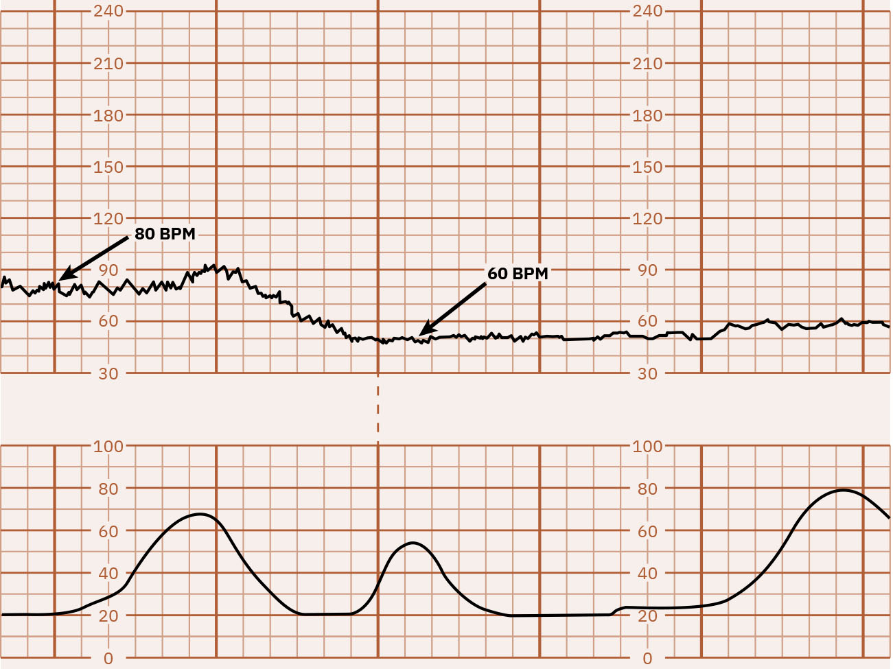

Página 4 · Vigilância aguda e cardiotocografia
Parâmetro 1: a linha de base
Onde o coração está batendo na maior parte do tempo — e a partir de quanto isso vira taquicardia ou bradicardia?
Os quatro parâmetros do laudo
A interpretação da cardiotocografia se faz sobre quatro parâmetros: linha de base, variabilidade, acelerações e desacelerações. Com esses quatro, lauda-se o exame por completo — não existe quinto elemento escondido. Cada página adiante instala um deles; aqui começa o primeiro.
Interativo: clique em cada parâmetro para isolá-lo no traçado.
Um mapa do arco que a aula percorre: com linha de base · variabilidade · acelerações · desacelerações lauda-se o traçado por completo — não há quinto elemento. Cada hotspot isola um parâmetro e dá sua definição em uma linha.O que é a linha de base
A linha de base é a média do batimento numa janela de 10 minutos — onde o batimento se manteve na maior parte do tempo. Não é o valor num instante qualquer; é a tendência central ao longo de dez minutos, desconsiderando os picos e vales transitórios. E há um pré-requisito que já anuncia o próximo parâmetro: o batimento tem de oscilar. Se o traçado vira uma linha reta, isso é extremamente preocupante — é o gancho para a variabilidade.
A faixa normal hoje
A faixa normal da linha de base, hoje, é de 110 a 160 bpm. Guarde a versão histórica, porque cai: antigamente a faixa normal era considerada 120 a 160 bpm. A mudança foi no limiar inferior — desceu de 120 para 110. Saber os dois (o vigente e o antigo) é minúcia de banca.
Taquicardia e bradicardia
Manter-se a maior parte do tempo acima de 160 bpm caracteriza taquicardia; manter-se abaixo de 110 bpm caracteriza bradicardia. Os limiares são espelho da faixa normal: acima do teto, taqui; abaixo do piso, bradi.
Interativo: mova o slider da FCF e observe a faixa correspondente acender.
Deslize a frequência: a faixa acende conforme o valor — 110–160 normal, >160 taquicardia, <110 bradicardia. Ao passar por um pico isolado, o rótulo avisa que aquilo “não é taquicardia — falta a sustentação por 10 min”. É a pegadinha-mãe do parâmetro.A regra da sustentação por 10 minutos
Aqui está a pegadinha do parâmetro, e ela é regra de ouro: taquicardia e bradicardia exigem mudança de padrão sustentada por 10 minutos — não pico isolado. Subir a 160 e voltar não é taquicardia; uma queda com resolução rápida não é bradicardia. A bradicardia é manter abaixo de 110, e a taquicardia é manter acima de 160, ao longo desses 10 minutos. Um evento transitório é outro parâmetro (aceleração ou desaceleração) — não muda a linha de base. Confundir pico com linha de base é erro clássico.
| Situação | Corte |
|---|---|
| Normal (hoje) | 110–160 bpm |
| Antigo (cai em prova) | 120–160 bpm |
| Taquicardia | >160 bpm — sustentada 10 min |
| Bradicardia | <110 bpm — sustentada 10 min |



O achado fica no traçado superior da FCF (não no gráfico de contrações): a linha de base é onde o batimento se mantém a maior parte do tempo.
A chave para a prova é não chamar pico ou queda transitória de mudança de linha de base — taquicardia e bradicardia exigem persistência por 10 minutos. Menos que isso, pense antes em aceleração, desaceleração prolongada ou captação da frequência materna.
OpenStax / Rice University via Medicine LibreTexts — CC BY 4.0 · página de origem
Quiz — fixação
Um traçado mostra a FCF oscilando em torno de 140 bpm, com um pico isolado que sobe a 165 bpm por 40 segundos e retorna. Como se classifica a linha de base?
- B) Correta. A linha de base é a média em 10 min (≈140, normal). Um pico a 165 que retorna é evento transitório — taquicardia exige o padrão sustentado.
- A) Cai na pegadinha. Confunde pico isolado com mudança de linha de base — 165 > 160 "parece" taquicardia se você ignora o tempo.
- C) Rótulo vazio. Não há nada abaixo de 110; "paradoxal" apenas soa técnico.
- D) Usa a faixa antiga como se fosse a atual. A faixa vigente é 110–160, e um valor pontual fora dela não invalida nada.
Sobre a linha de base, assinale a correta:
- B) Correta. Média em 10 min, 110–160 hoje (120–160 no passado); o batimento precisa oscilar — linha reta alarma (gancho da variabilidade).
- A) Mistura linha de base com desaceleração ligada à contração. Não é valor instantâneo nem atrelado à contração; é média em janela.
- C) Inverte o sinal. Linha reta é dos achados mais preocupantes (perda de variabilidade); "estável" soa bom, mas estabilidade sem oscilação é ruim.
- D) Números plausíveis, porém errados. 100–180 não é a faixa — nem a atual (110–160) nem a antiga (120–160).
Se o batimento tem de oscilar, a próxima pergunta é o coração do exame: quanto ele oscila — e o que fazer quando ele para de oscilar.